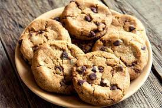

Vive les cookies
//  Ce site est encore en développement
//
Ce site est encore en développement
//
Etymologie du mot :"cookie"
Le mot anglais « cookie » vient du néerlandais « koekje » (petit biscuit), introduit aux États-Unis par les colons hollandais de la Nouvelle-Amsterdam. C'est un terme utilisé en Amérique du Nord pour désigner toutes sortes de biscuits secs. Dans les autres pays anglophones on utilise le mot « biscuit ». En français, le mot « cookie » désigne généralement un type bien précis de biscuit rond aux pépites de chocolat appelé en anglais chocolate chip cookie (« petit biscuit aux pépites de chocolat »), ou parfois d'autres biscuits similaires. On trouves également des cokies informatiques qui permettent aux sites de garder vos préférences et vos mots de passe en mémoire
Les cookies sont, selon moi, les meilleurs biscuits car ils sont bons et sucrés. On peut en trouver dans les boulangeries, les épiceries ...
Invention du cookie :
Ce petit gateau a été inventé en 1938 par des cuisiniéres américaines à Whitman, au Massachusetts.
Fait par raphi35132 avec repl.it